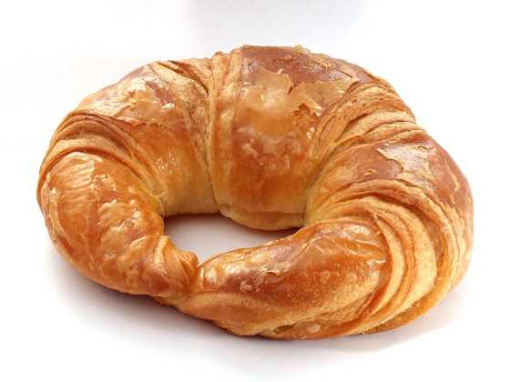
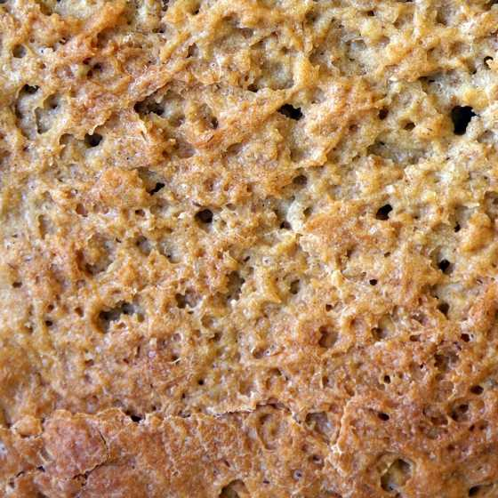
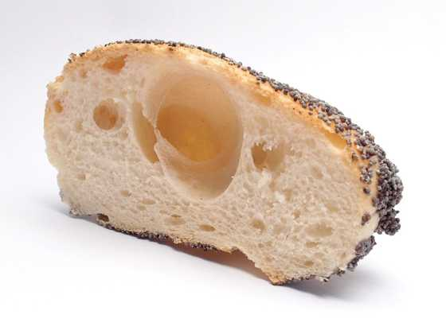
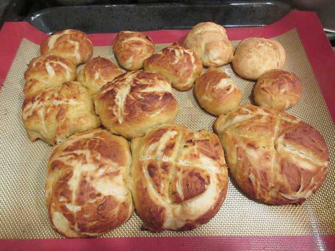
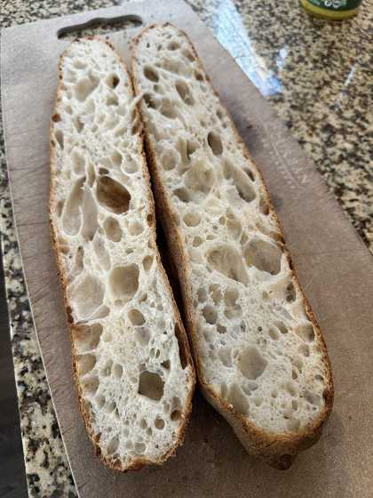
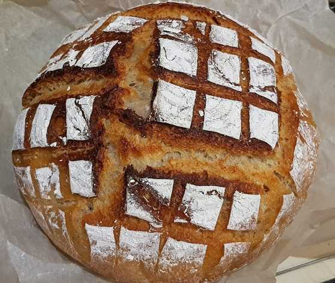
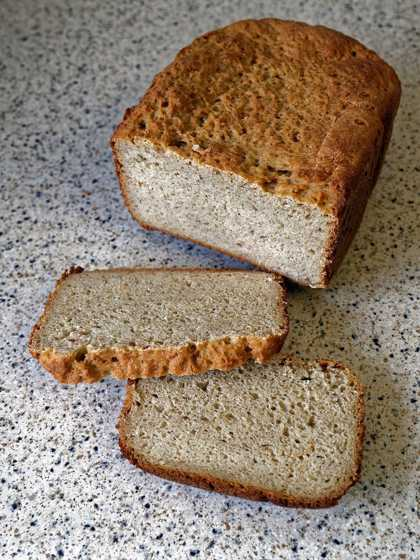
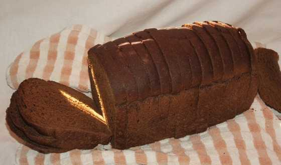
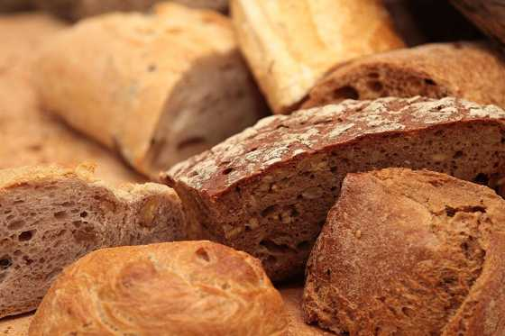

BAKERY / 茨城県日立市河原子町
BAKE SHOP
CORIN
旧郵便局の赤レンガの店で、国産小麦のやさしい白パンを。
思い出の味から生まれた白パンと、毎日食べたくなる素朴な焼菓子のお店です。
Instagramを見る
ABOUT
お店の由来と想い
BAKE SHOP CORINは、茨城県日立市河原子町にあるパンと焼菓子のお店です。店舗は旧河原子郵便局の建物を改装したもので、2021年9月にオープンしたと紹介されています(以前の名称は「コリン ブレッド&スイーツ」)。
看板の白パンは、オーナーの小川さんの幼少期の思い出の味がもとになっているとのこと。もっちりした生地に、甘いカスタードを合わせたパンが生まれました。国産小麦などこだわりの材料を使い、パンのほか、スコーンやマフィン、クッキーも手がけています。
- 旧郵便局を改装した店舗
- 国産小麦の白パンが人気(約10種類との紹介)
- イートインスペースがあり、淹れたてのコーヒーと楽しめるとの紹介
店名「CORIN」の意味は確認できていません。
BREAD & SWEETS
パンと焼菓子
紹介記事では、白パン(カスタードなど)、バターを使わないもっちりした田舎パン、クロワッサン、スコーン、マフィン、クッキーなどが挙げられています。内容は日によって変わる可能性があります。
- 価格
- 準備中
- メニュー詳細
- 準備中
下の写真はフリー素材のイメージで、店舗の実際の様子・商品ではありません。

Salicyna / CC BY-SA 4.0

SKopp / CC BY-SA 3.0

Acabashi / CC BY-SA 4.0

SKopp / CC BY-SA 3.0

Nleamy / CC BY 2.5

Infrogmation / CC BY-SA 4.0

daisybush / CC BY 2.0

Valereee / CC0 1.0

Fæ / CC BY-SA 4.0

Acabashi / CC BY-SA 4.0

Glane23 / CC BY-SA 3.0

www.Pixel.la Free Stock Photos / CC0 1.0
VOICE
口コミ(イメージ例)
ふわふわの白パンが、どこか懐かしい味でした。おやつにも朝ごはんにもよさそうです。
古い建物を活かした雰囲気のお店。パンを選ぶ時間もゆっくり楽しめそうです。
焼菓子はお土産にぴったり。素朴な味わいで、つい手が伸びます。
※制作側が作成したイメージ例であり、実在のお客様の声ではありません。
ACCESS
アクセス・ご案内
- 住所
- 〒316-0005 茨城県日立市河原子町４丁目３−６
- 電話
- 準備中
- 営業時間
- 準備中(最新情報はInstagramでご確認ください)
- 定休日
- 準備中
- @bake_shop_corin
CREDITS
写真クレジット
写真はフリー素材(Wikimedia Commons)のイメージで、店舗の実際の様子ではありません。縮小等の加工をしています。ライセンス詳細は creativecommons.org をご覧ください。
- 網の上で冷ます丸いパン(images/a-amber.jpg): Loaf of sourdough bread cooling / Nutrition, Food Safety & Health / CC0 1.0(creativecommons.org)
- バターのかたまり(images/b-butter.jpg): Block of butter 2020-09-28 2942 / Salicyna / CC BY-SA 4.0(creativecommons.org)
- クロワッサン(images/c-croissant.jpg): Croissant, whole / SKopp / CC BY-SA 3.0(creativecommons.org)
- パンの皮のアップ(images/e-exterior.jpg): Crust of milk loaf with wheatgerm / Acabashi / CC BY-SA 4.0(creativecommons.org)
- 気泡のある小さなパン(images/h-hole.jpg): Bread roll with crumb hole / SKopp / CC BY-SA 3.0(creativecommons.org)
- パンの断面(images/i-inside.jpg): Sourdoughbreadcrumb.jpg / Nleamy / CC BY 2.5(creativecommons.org)
- 天板に並ぶ小さなパン(images/k-knife.jpg): Pretzel rolls on a tray, December 2023 / Infrogmation / CC BY-SA 4.0(creativecommons.org)
- 粉をまとった丸いパン(images/n-noknead.jpg): No-Knead Bread - Finished Loaf (294068096) / daisybush / CC BY 2.0(creativecommons.org)
- バゲットの断面(images/o-open.jpg): Baguette interior / Valereee / CC0 1.0(creativecommons.org)
- 格子の切れ込みのあるパン(images/o-overhead.jpg): Home made sourdough cob / Fæ / CC BY-SA 4.0(creativecommons.org)
- 角形のパン(images/p-pan.jpg): Milk loaf with wheatgerm / Acabashi / CC BY-SA 4.0(creativecommons.org)
- ライ麦パン(images/r-rye.jpg): Dark rye bread / Glane23 / CC BY-SA 3.0(creativecommons.org)
- 切り分けたパン(images/s-slice.jpg): Bread-food-healthy-breakfast (24244213301) / www.Pixel.la Free Stock Photos / CC0 1.0(creativecommons.org)